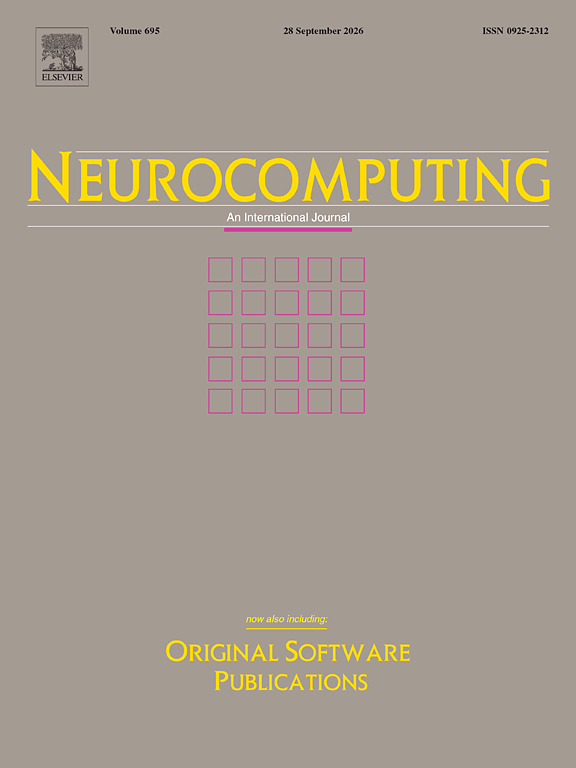

Publications
Journal Articles

2026
Journal Article
Vision transformers for neurological disorder diagnosis: a systematic review of architectural taxonomies, challenges, and future directions
Expert Systems with Applications
2026
Journal Article
LACTNet: A Label-Aware CNN-Transformer Network for surface defect segmentation
Expert Systems with Applications

2025
Journal Article
A deep reinforcement learning approach for wind speed forecasting
Engineering Applications of Computational Fluid Mechanics
2025
Journal Article
A two-stage deep learning-based hybrid model for daily wind speed forecasting
Heliyon

2024
Journal Article
Energy consumption of high-rise double skin façade buildings: A machine learning analysis
Journal of Building Engineering

2024
Journal Article
Deep learning hybrid models with multivariate VMD for solar radiation
Alexandria Engineering Journal

2024
Journal Article
Fall risk classification using posturographic parameters
Journal of NeuroEngineering and Rehabilitation
2024
Journal Article
Explainable machine learning models for estimating daily dissolved oxygen concentration of the Tualatin River
Engineering Applications of Computational Fluid Mechanics

2024
Journal Article
A systematic review of deep learning approaches for surface defect detection in industrial applications
Engineering Applications of Artificial Intelligence

2023
Journal Article
Forecasting PM2.5 concentration based on integrating CEEMDAN with SVM and LSTM
Ecotoxicology and Environmental Safety

2023
Journal Article
Application of explainable artificial intelligence in medical health: A systematic review of interpretability methods
Informatics in Medicine Unlocked

2023
Journal Article
A Robust Approach for Endotracheal Tube Localization in Chest Radiographs
Frontiers in Artificial Intelligence

2023
Journal Article
Monthly river discharge forecasting using hybrid models based on extreme gradient boosting coupled with wavelet theory and Lévy Jaya optimization algorithm
Water Resources Management

2022
Journal Article
Labeled projective dictionary pair learning: Application to handwritten numbers recognition
Information Sciences
2022
Journal Article
Performance improvement of machine learning models via wavelet theory in estimating monthly river streamflow
Information Sciences

2016
Journal Article
Projective dictionary pair learning for EEG signal classification in brain computer interface applications
Neurocomputing
Conference Papers
2024
Conference Paper
A Hybrid CNN-Transformer Approach for Accurate Surface Defect Detection
TAAI 2024
2021
Conference Paper
Classification of handwritten Chinese numbers with CNNs
5th International Conference on Pattern Recognition and Image Analysis (IPRIA)